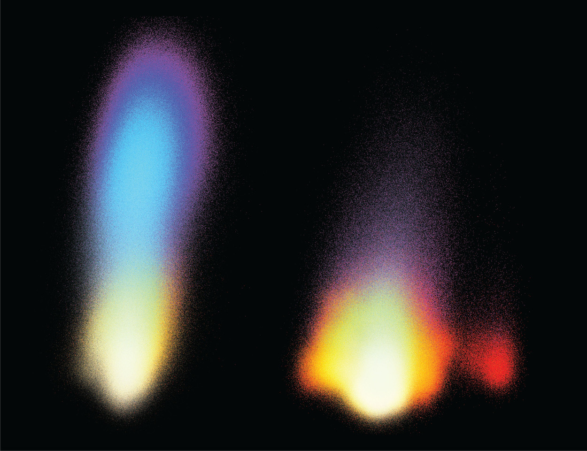

Wet
---Hard---
Soft
ALife
Evolution of RNA enzymes that copy themselves.

Populations of "Hammerhead", an RNA polymerase RNA enzyme, and effects of self-replication over time at low (left) and high (right) fidelity. The low fidelity hammerhead sequence drifts away from its original, functional sequence. Higher fidelity versions of the same RNA enzyme maintain more of their sequence and function. From Papastavrou et al.
2024 Image credit: Salk Institute.